Analisi, posizionamento, restyling, Instagram, media kit e piano operativo. Dati verificati separati dalle ipotesi.
Instagram senza login mostra solo i metadati pubblici. Tutto ciò che segue è diviso in tre livelli: verificato, ipotesi, non accessibile.
| Elemento | Valore | Fonte |
|---|---|---|
| Nome visualizzato | LELIA M | Metadati pubblici Instagram, 13 ott 2026 |
| Follower / seguiti / post | 3.014 / 688 / 338 | Metadati pubblici Instagram, 13 ott 2026 |
| Bio | "Full-time diva 💅🏻 · [Fashion & lifestyle] · 📍Milan, Italy · Collab: leliamoroz.pr@gmail.com" | Rilevata il 12 ott 2026 (docs/BRAND-ANALYSIS.md) |
| Foto profilo | Ritratto su fondo magenta, 100×100 px la versione pubblica | og:image del profilo |
| Reel analizzati | 8, pubblicati tra il 18 lug e il 27 set 2026. Brand taggati: The Attico (3), Coperni (1), Giuseppe Di Morabito (1) | Pagine pubbliche dei reel |
| Sito | lelusham.com online su GitHub Pages, 5 pagine, hero video, Social Kit con 8 reel, pagina Brand | Repository e richiesta HTTP |
| HTTPS | Non funziona: il certificato servito è quello generico di GitHub (*.github.io). Chrome e Safari mostrano un avviso di sicurezza su https://lelusham.com | Verifica TLS, 13 ott 2026 |
Un buyer o un PR vede una nano-creator milanese con buon gusto e accesso alle boutique, ma senza una proposta chiara. La decisione di gifting è facile, quella di pagamento è impossibile senza numeri. L'obiettivo del progetto è spostare la percezione da "ragazza con stile" a "creator con un formato, un luogo e un pubblico misurato".
Il posizionamento prende ciò che Lelia già fa meglio e lo rende vendibile. Non si inventa una nicchia: si nomina quella esistente.
Cosa resta autentico: la voce ("Lo ascolto sempre", "Full-time diva" come firma, non come bio), il telefono in mano, le domande, il mix di lingue. Cambia solo la presentazione.
Il sistema è già implementato sul sito e in questa pagina. Qui viene esteso a Instagram, al media kit e ai documenti commerciali con regole precise.
#EDE8E1 sfondo#F7F4EF superfici#C9C4BC linee#8A7F72 testo secondario#1E1C1A testo, fondi scuri#E8307F accento, una volta per pagina#5E2B7A accento secondarioRegola: il magenta compare una volta per superficie (una parola, un bottone, un bordo). Mai come sfondo pieno, mai su foto. Il colore nelle immagini arriva dai capi.
| Superficie | Formato | Griglia | Margini e zone sicure |
|---|---|---|---|
| Sito desktop | 1440 px | 12 colonne, gutter 4vw (max 56 px) | Hero: testo colonne 1–6, media 9:16 colonne 8–12 |
| Sito mobile | 390 px | 1 colonna | Gutter 16 px, titolo in alto sul cielo, testo nel terzo inferiore |
| Reel e copertina | 1080×1920 | Terzi orizzontali | Zona sicura: 250 px in alto, 420 px in basso, 60 px ai lati. Titolo copertina nel terzo inferiore, anteprima feed ritagliata a 1080×1350 centrata |
| Carosello | 1080×1350 | 8 colonne, gutter 24 px | Margine 72 px. Titolo Bebas a 120 px in alto a sinistra, foto a sangue |
| Stories | 1080×1920 | Terzi | Testo e sticker tra 250 e 1500 px di altezza |
| Media kit e documenti | A4 verticale | 12 colonne, gutter 5 mm | Margini 14 mm, baseline 4 mm, testata e piè di pagina a 10 e 9 mm |
Fotogramma pulito del reel, titolo Bebas bianco di 2–3 parole nel terzo inferiore con sfumatura scura al 60%. Nessun logo. Esempi: "WISHLIST TRY-ON", "MFW · REMOTELY", "WHICH BAG?".
Cerchio Stone #EDE8E1, una parola Bebas Ink al centro, 44 px su 1080. Niente icone. Cinque copertine, vedi sezione 04.
Slide 1: foto a sangue, titolo Bebas in alto a sinistra con il numero di opzioni ("3 BAGS. ONE ANSWER."). Slide 2–4: una opzione per slide con etichetta. Ultima slide: Stone con la domanda in Instrument Serif e l'invito a commentare.
Stesse pagine del media kit: Stone per le pagine chiare, Ink per l'ultima. Titolo Bebas a 64 pt, corpo Manrope 9,5 pt, tabelle con riga superiore Ink da 1 px. Il file HTML del kit è il master riutilizzabile.
Il mockup "dopo" usa foto e numeri reali. Le Stories in evidenza "prima" non sono visibili senza login e sono mostrate vuote.
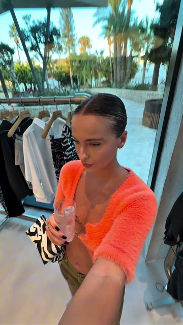
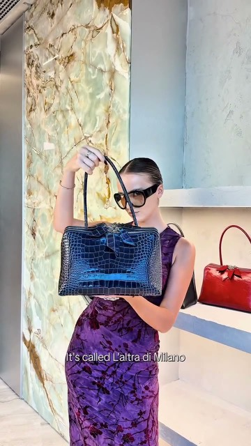
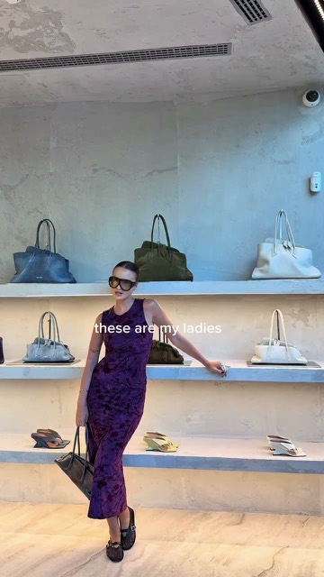
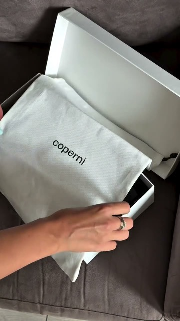
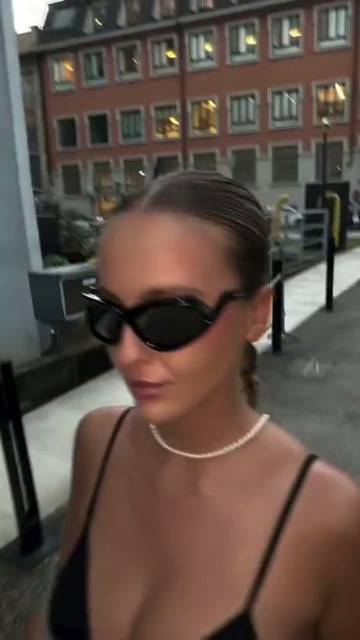
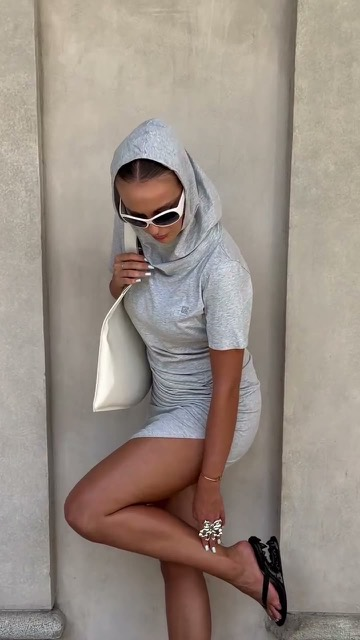
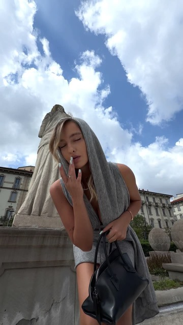
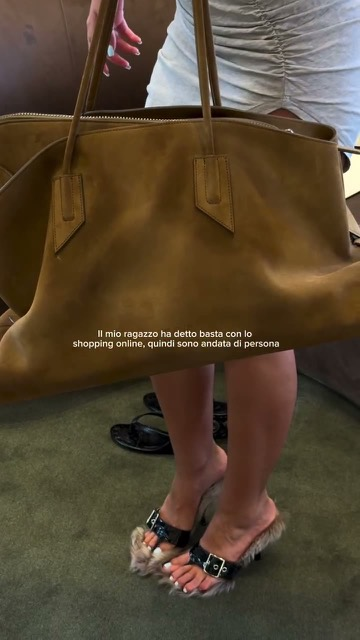
LO ASCOLTO SEMPRENome visualizzato (ricercabile)LELUSHAM · Lelia M
Bio · 4 righe, 150 caratteri maxFashion & lifestyle, Milano 🇮🇹 Try-on in boutique, MFW dall'interno, la città come set Full-time diva. A life styled my way. ↓ Media kit & collab
Link in biohttps://lelusham.com/connect.html (una sola destinazione, niente aggregatori: la pagina ha email, Instagram e il media kit in PDF)
Call to actionBottone "Email" attivo sul profilo (impostazioni → contatti) con leliamoroz.pr@gmail.com; quando esiste, hello@lelusham.com.
| Ordine | Nome | Copertina | Contenuto |
|---|---|---|---|
| 1 | TRY-ON | Stone, Bebas Ink | Le prove in boutique: Attico, Passeggiata, le domande "which?" |
| 2 | MFW | Stone, Bebas Ink | Show e showroom della settimana della moda, per stagione |
| 3 | MILANO | Stone, Bebas Ink | Street, luoghi, pietra e marmo. Il "set" |
| 4 | TRAVEL | Stone, Bebas Ink | Yacht, hotel, viaggi |
| 5 | COLLAB | Stone, Bebas Magenta | Cosa si può fare insieme: 3 stories con i servizi del kit e il link a lelusham.com/connect.html. L'unica copertina con l'accento |
Da eliminare: qualsiasi Story in evidenza con nome generico o emoji come copertina. Massimo 5 cerchi: tutti visibili senza scorrere.
Oggi@coperni 🩰
PropostaShoes make the fit. Unboxing @coperni, le prime che indosso a MFW. Le tenete con il grigio o con il viola? 👇 Shoes make the fit. Unboxing the @coperni pair I'm wearing to MFW. Grey or violet with these? #coperni #milanfashionweek #milanostyle
Schema fisso: una riga di contesto, una domanda, la versione inglese, 3–5 hashtag specifici (brand, luogo, evento). Tempo di scrittura: due minuti.
| Mantenere | Modificare | Eliminare | Aggiungere |
|---|---|---|---|
| Formato domanda, luce naturale, bilingue, "Full-time diva" come firma | Nome visualizzato, bio, foto profilo su fondo Stone, copertine dei reel, caption | Reel in letterbox, overlay rosa pieno, testo sul volto, emoji come copertine | 5 Stories in evidenza, 3 post fissati, Story "Collab", link a lelusham.com/connect.html, bottone Email |
Quattro pagine A4, impaginate con il sistema visivo e con le foto reali. Il PDF è già esportato in docs/media-kit/LELUSHAM-media-kit.pdf e il file HTML è il master da aggiornare. I campi con bordo tratteggiato magenta sono segnaposto: nessun numero è stato stimato.
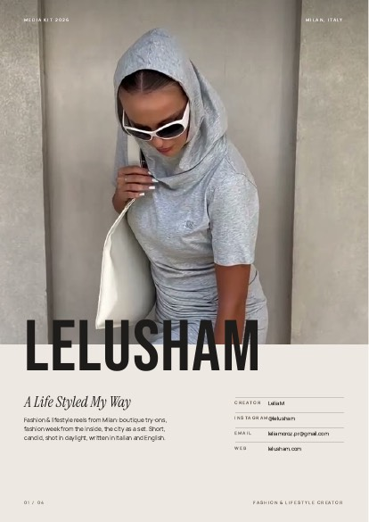
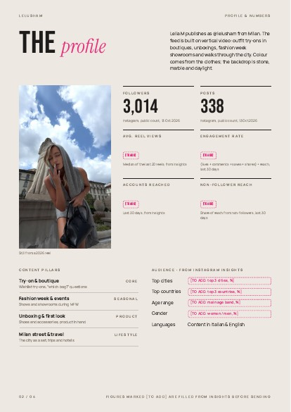
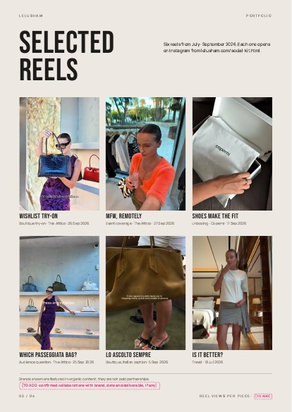
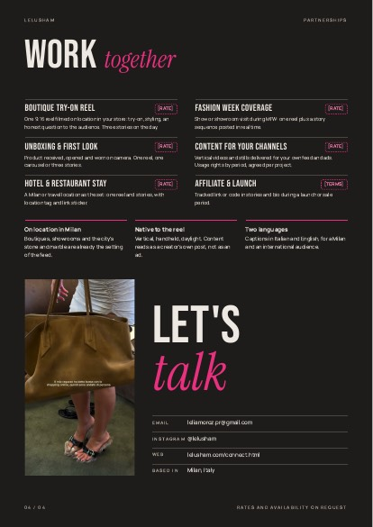
| Pagina | Disposizione | Da compilare |
|---|---|---|
| 01 Cover | Foto delle colonne in pietra a sangue per 196 mm; LELUSHAM a 116 pt a cavallo del bordo foto; claim e descrizione in basso a sinistra (110 mm); contatti in griglia a destra (62 mm). | Nulla |
| 02 Profilo | Titolo e intro su 12 colonne; ritratto 66×117 mm a sinistra; 6 statistiche su 2 colonne con etichetta, valore Bebas 40 pt e fonte; sotto, pillar e dati del pubblico. | Visualizzazioni medie, engagement, reach, reach non follower, città, paesi, età, genere |
| 03 Portfolio | 6 reel su 3 colonne, 82 mm di altezza, titolo Bebas 14 pt e riga con categoria, brand e data; nota legale sui brand in basso. | Visualizzazioni per reel; collaborazioni confermate, se esistono |
| 04 Partnership | Fondo Ink. 6 servizi su 2 colonne con tariffa a destra; 3 argomenti con bordo magenta; immagine 62 mm e "Let's talk" a 84 pt con contatti. | Tariffe o "su richiesta"; termini affiliazione |
Come compilare: Instagram → Insights → ultimi 30 giorni per reach, account raggiunti e demografia; per le visualizzazioni medie, aprire gli ultimi 20 reel e prendere il valore mediano. Aggiornare il kit ogni trimestre e indicare sempre la data.
Ricerca su fonti pubbliche del 13 ottobre 2026. Le etichette: programma = esiste un programma pubblico per creator o affiliati; evidenza = l'azienda ha lavorato con creator ma senza programma aperto; categoria = compatibile per contenuto, nessun programma trovato. Le percentuali vengono da siti aggregatori e vanno confermate con il brand. Nessuna di queste aziende ha una collaborazione confermata con Lelusham: gli unici brand presenti nei contenuti sono The Attico, Coperni e Giuseppe Di Morabito, come tag organici.
| Settore | Collaborazione da proporre | Contenuto | Valore da comunicare |
|---|---|---|---|
| Brand contemporary e accessori | Gifting con consegna definita, poi reel retribuito e contenuti per i canali del brand | Unboxing + try-on in città, formato "which?" | Video verticale pronto per le ads, girato a Milano, due lingue |
| Boutique e resale | Reel in negozio, 1 reel + 3 stories con tag luogo | Try-on in boutique, domanda al pubblico | Il formato esiste già (Attico): prova con link |
| Beauty e nails | Codice affiliato in stories; per i saloni, barter | Dettaglio mani e borsa, "get ready" prima di MFW | Coerenza con lo stile del feed, non un salone a caso |
| Hospitality e viaggi | Soggiorno o tavolo in cambio di 1 reel + stories, con link sticker | Il luogo come set: ingresso, camera, rooftop | Il reel yacht e la cabina mostrano che il contenuto funziona |
| Piattaforme per micro-creator | Iscrizione e profilo completo con il kit | Portfolio dei 6 reel | Nano creator milanese con formato definito |
Lacune: nessun programma pubblico per creator trovato tra saloni, hotel e rooftop milanesi: si lavora per contatto diretto in barter. Brand emergenti come Gia Borghini, Benedetta Bruzziches, Rosantica e Gedebe non sono stati inclusi per mancanza di risultati, non per esclusione.
In ordine di priorità. Ogni voce dice cosa fare, come e cosa si ottiene.
Copiare i testi della sezione 04. Impostare la categoria "Creator digitale" e il bottone Email.
Risultato: chi cerca "Lelusham" trova il profilo e capisce in 3 secondi cosa fa Lelia.
Ritratto dal video dell'hero, ritagliato al volto, su fondo neutro. Stessa immagine sul sito e nel kit.
Risultato: un volto riconoscibile e coerente ovunque.
Fissare i tre reel indicati. Creare le copertine con il template Stone (un'ora in Canva o Figma con Bebas Neue, gratuito). Riempire "Collab" con tre stories prese dalla pagina 4 del kit.
Risultato: il profilo mostra accesso, formato e offerta senza scorrere.
Rifare la copertina degli ultimi 12 reel con il template: fotogramma pulito, titolo nel terzo inferiore. Si cambia da "Modifica" senza ripubblicare.
Risultato: griglia leggibile come un indice.
Applicare le cinque regole fotografiche della sezione 03 a ogni nuovo reel. Stampare la zona sicura 1080×1920 come promemoria.
Risultato: contenuti nuovi già coerenti, senza post-produzione.
Il wordmark Bebas è un segnaposto. Far disegnare o approvare una versione vettoriale definitiva (anche solo lo stesso lettering con spaziatura fissata) e caricarla su brand.html.
Risultato: un asset consegnabile ai brand per co-branding.
Compilare i segnaposto delle pagine 2 e 3. Decidere le tariffe della pagina 4 oppure lasciare "su richiesta" e togliere i segnaposto.
Risultato: un PDF inviabile. Senza numeri il kit non va inviato.
Caricare il kit su lelusham.com/connect.html come download e nella Story "Collab".
Risultato: ogni richiesta di collaborazione riceve lo stesso documento.
Su GitHub → Settings → Pages: verificare il dominio personalizzato, attendere il certificato e attivare "Enforce HTTPS". Se il DNS ha solo il record A, aggiungere anche il CNAME per www.
Risultato: nessun avviso di sicurezza quando un brand apre il link in bio.
Creare hello@lelusham.com (inoltro gratuito con Cloudflare Email Routing o ImprovMX) con risposta da Gmail. Aggiornare bio, sito e kit.
Risultato: contatto professionale, stessa casella di sempre.
Trasformare connect.html in una pagina con i sei servizi del kit, il download del PDF e un modulo con tre campi (azienda, tipo di collaborazione, messaggio) che apre l'email precompilata.
Risultato: richieste già qualificate, meno scambi di email.
Collegare un contatore senza cookie (Plausible o GoatCounter) e verificare quante visite arrivano dal link in bio.
Risultato: un numero in più per il kit del prossimo trimestre.
Partire dalla sezione 06: 10 brand, 10 boutique e resale, 5 hospitality, 5 beauty. Per ciascuno: nome del referente PR o marketing, canale di contatto, contenuto già realizzato che somiglia alla proposta.
Risultato: una pipeline, non email sporadiche.
Chi sono, un reel simile già fatto (link), cosa propongo (un servizio del kit), cosa chiedo, il PDF in allegato. Inviarne 5 a settimana. Registrarsi sulle piattaforme per micro-creator indicate nella sezione 06.
Risultato: con 5 invii a settimana e un tasso di risposta realistico del 10%, 2 conversazioni al mese.
Per ogni lavoro: reel, dati a 7 giorni, una frase del brand. Aggiornare pagina 3 del kit e la Story "Collab".
Risultato: il kit cresce con prove, non con promesse.
| Elemento | Oggi | Dopo | Azione |
|---|---|---|---|
| Nome | LELIA M | LELUSHAM · Lelia M | Riprogettare |
| Bio | Voce senza offerta | Cosa, dove, firma, invito | Riprogettare |
| Formato domanda | Presente | Presente, con sondaggio in stories | Mantenere |
| Luce e luoghi | Naturale, Milano | Uguale, con regole di inquadratura | Mantenere |
| Copertine reel | Testo casuale, letterbox | Template: titolo nel terzo inferiore | Riprogettare |
| Overlay rosa pieno | In un reel | Assente: il magenta vive solo nel sistema grafico | Eliminare |
| Stories in evidenza | Non verificabili | 5, con copertine Stone | Aggiungere |
| Media kit | Assente | 4 pagine, con dati da Insights | Aggiungere |
| Sito | Online, HTTPS rotto, Gmail | HTTPS attivo, hello@lelusham.com, pagina Collab con PDF | Riprogettare |
| Logo | Segnaposto tipografico | Lettering definitivo vettoriale | Aggiungere |
Credibilità per un brand, in una riga: un nome cercabile, un formato riconoscibile, un luogo (Milano, dentro le boutique), un documento con numeri datati e un sito che non dà errori. Tutto il resto Lelia lo fa già.